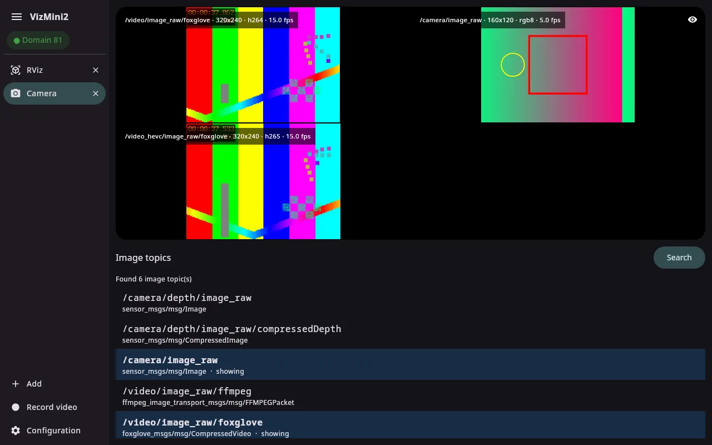

The PC app
VizMini2 also runs on a Linux or Windows PC, with the same tabs as the phone in a resizable window: handy next to the robot’s own terminal, on a big screen in the lab, or with a mouse and keyboard for long sessions. Your tabs, dashboards and profiles move between phone and PC (export them, or link an account).
Installing
It runs on Ubuntu 20.04 or newer (x86-64, or any Linux with glibc 2.31 or newer) with OpenGL. ROS 2 is not needed on the PC: the app brings its own DDS. Any ROS 2 distro on the network works (Foxy, Humble, Jazzy, Kilted, Lyrical…).
With apt (recommended): add VizMini2’s repository once, and
sudo apt upgradebrings each new version like any other package:wget -qO- https://github.com/VizMini2/VizMini2/releases/download/apt/vizmini2-archive-keyring.gpg | sudo tee /usr/share/keyrings/vizmini2-archive-keyring.gpg > /dev/null echo "deb [arch=amd64 signed-by=/usr/share/keyrings/vizmini2-archive-keyring.gpg] https://github.com/VizMini2/VizMini2/releases/download/apt ./" | sudo tee /etc/apt/sources.list.d/vizmini2.list sudo apt update && sudo apt install vizmini2
The .deb (from the releases page):
sudo apt install ./vizmini2_*_amd64.deb
Installing it also adds VizMini2’s repository (the first time, unless apt already has it), so
sudo apt upgradebrings the new versions from then on. If you don’t want that, remove/etc/apt/sources.list.d/vizmini2.list: it is not added again.Then open VizMini2 from the applications menu, or run
/opt/vizmini2/bin/vizmini2.sudo apt remove vizmini2removes it (your settings stay in your home folder), andsudo apt purge vizmini2removes the repository too.The .tar.gz: the same app without installing it. Unpack it anywhere and run
vizmini2/bin/vizmini2.As a ROS 2 package (Linux, Jazzy or newer), built from the source code. It is built and runs with the system’s Java (17 or newer;
rosdep installbringsdefault-jdk), and the first build needs internet: Gradle downloads its dependencies and the prebuilt native libraries. On Humble, Ubuntu 22.04’s Java (11) is too old: use the.debthere, which connects to Humble robots just the same.cd ~/ros2_ws/src && git clone https://github.com/VizMini2/VizMini2.git vizmini2_src cd ~/ros2_ws && rosdep install --from-paths src --ignore-src -y colcon build --packages-select vizmini2 && source install/setup.bash ros2 run vizmini2 vizmini2
The first time, it takes
ROS_DOMAIN_IDfrom the terminal.
Recommended extras: ffmpeg (H.264/H.265 video topics and recording the window) and
libnotify-bin (desktop notifications for alerts):
sudo apt install ffmpeg libnotify-bin
On Windows
It runs on Windows 10 or 11 (64-bit). As on Linux, ROS 2 is not needed on the PC.
The .msi (from the releases page): open it and follow the steps. It installs for your user, without asking for an administrator, in %LOCALAPPDATA%\VizMini2 (the second step lets you pick another folder), with a shortcut on the desktop and a VizMini2 folder in the Start menu. The installer isn’t signed, so Windows may warn before opening it (“Windows protected your PC” or a security warning): choose More info → Run anyway, or Run. To upgrade, install the new
.msithe same way; uninstall it from Settings → Apps. Neither touches your settings, bags or videos.The .zip: the same app without installing it. Unzip it anywhere and run VizMini2\VizMini2.exe.
The first time it connects, Windows Firewall asks whether VizMini2 may use the network: allow it. If your network is marked as Public in Windows, robots on it may not show up; mark it as Private (Settings → Network & internet → your network) or use the robot’s IPs or a Discovery Server in Network.
Recommended extra: ffmpeg, for H.264/H.265 video topics and recording the window:
winget install ffmpeg
If winget isn’t available, download it from ffmpeg.org
and add its bin folder to the PATH. Without it, the app says so when it needs it.
The window
Sidebar (left): the connection badge (Domain N), your tabs, Add, Record video and Configuration. The ☰ button shrinks it to icons (hover one to see its name).
Click a tab to open it; × deletes it, after asking (a dashboard takes its widgets with it).
Right-click a tab, like a long press on the phone: Rename, Duplicate (a copy right below, widgets included), Delete, and export it as a VizMini2 file (to add it on another PC or phone with Add → Import) or, when it has something they understand, as an RViz 2 file, a panel layout or a plot layout (Import and export).
Add opens the catalog: the same tab types and ready-made dashboards as on the phone, and Import a tab, an RViz file or a layout… with a file dialog.
Configuration: network (domain, middleware, Zenoh, foxglove_bridge, interfaces), appearance (language, theme, interface size), the account, topic variables and robot profiles. See Network.

Without a robot: the demo
Configuration → Start demo runs the same simulated robot as the phone, on this computer only
(its own domain, 231, and only the loopback, so nothing reaches your network): a room with a map,
laser, camera (also as H.264 video, with ffmpeg), odometry, diagnostics, services, an action, a
lifecycle node and a ros2_control controller manager, with tabs and a dashboard to try everything.
Drive it from Drive. While it runs, Exit demo stays at the top of the sidebar; leaving it
puts your tabs and connection back. vizmini2 --demo (VizMini2.exe --demo on Windows)
starts straight in it; closing the app in demo mode reopens it in demo mode.
Mouse and keyboard
3D view: drag to orbit, right or middle drag (or Shift + drag) to pan, the wheel to zoom; the toolbar has all the tools (on the phone some are under the ruler menu). In the node graph and the TF tree, the wheel zooms and a double-click fits the view.
Dashboards: Ctrl+E edits, Ctrl+Z undoes, Esc leaves edit mode, Ctrl+0 resets the zoom and Ctrl + wheel zooms. Drag topics from the Topics tab (or fields of a message) onto widgets or plots.
Teleop: drag the joystick with the mouse, or drive with W A S D or the arrow keys; Space is STOP.
Record the window: Ctrl+Shift+R starts and stops it.
Recording the window
Record video in the sidebar (or Ctrl+Shift+R) records the whole window, 3D view
included, to an MP4 in ~/Videos/VizMini2 (Videos\VizMini2 on Windows); while it records, the
item shows the time and stops it. When the video is saved, a notification says where (on Windows,
clicking it shows the video in Explorer). It needs ffmpeg. To show someone what the robot did,
this is usually quicker than a bag.
Notifications
The PC shows the alerts (your topic rules, lost contact with the robot and
diagnostics in ERROR) as desktop notifications while VizMini2 is open: with notify-send on
Linux, and from VizMini2’s icon in the system tray on Windows (or on a Linux desktop without
notify-send). The three switches are at the top of the Alerts tab; they are on by default.
Phone and PC: what changes
Phone |
PC |
|
|---|---|---|
Tabs |
All |
All |
Demo robot |
Yes |
Yes (Configuration, or |
Driving |
Touch joysticks, gamepad |
Mouse, keyboard |
Files (bags, maps, exports) |
Share sheet |
File dialog; bags in ~/.local/share/vizmini2/bags (Windows: %LOCALAPPDATA%\VizMini2 Data\bags) |
Rename or duplicate a tab |
Long press |
Right-click |
Screen recording |
Movies/VizMini2 |
~/Videos/VizMini2 (Windows: Videos\VizMini2), needs ffmpeg |
Alerts in the background |
Yes, with the background connection |
While the window is open |
Crash reports |
Firebase Crashlytics |
None |
Where it keeps things
Settings, tabs and profiles: ~/.config/vizmini2
Bags: ~/.local/share/vizmini2/bags
Caches (3D view, native libraries, GPS map tiles): ~/.cache/vizmini2
Screen videos: ~/Videos/VizMini2
Removing ~/.config/vizmini2 starts from scratch.
On Windows:
Settings, tabs and profiles: %APPDATA%\VizMini2
Bags: %LOCALAPPDATA%\VizMini2 Data\bags
Caches (3D view, native libraries, GPS map tiles): %LOCALAPPDATA%\VizMini2 Data\Cache
Screen videos: Videos\VizMini2
Removing %APPDATA%\VizMini2 starts from scratch. Uninstalling VizMini2 does not delete any of these folders.
Command line
vizmini2 (or ros2 run vizmini2 vizmini2) takes a few options, mostly for scripts and
troubleshooting:
Option |
What it does |
|---|---|
|
Starts on ROS domain N (it is also saved). |
|
Opens that tab: its name, or the first tab of a type ( |
|
Without a window: connects, waits a few seconds, lists what it sees on the network and exits (code 0 if it saw another node, 1 if not). Useful to test the network from a terminal. |
|
Without a window: which ROS domains have nodes on the network. |
|
Opens the window, waits a few seconds, records it for N seconds (5 by default) and exits. Needs ffmpeg. |
|
Saves a screenshot of a tab without opening a window (1200×800 after 4 s by default; also
with |
|
Starts in demo mode, with the simulated robot. |
|
Changes a setting of the |
|
Plays that bag to the network in a loop as soon as it connects, like Play in the Bags tab. |
|
Adds a VizMini2 tab file, an RViz 2 file or a panel or plot layout, opens it, and prints what was not carried over. |
|
Adds the Showcase dashboard (almost every widget; try it with the demo) and exits: open the app afterwards. |
On Windows the program is VizMini2.exe. It is a windowed program, so a terminal doesn’t show what it prints: redirect it to a file, for example in PowerShell:
Start-Process "$env:LOCALAPPDATA\VizMini2\VizMini2.exe" -ArgumentList '--check' `
-RedirectStandardOutput check.txt -Wait -NoNewWindow; Get-Content check.txt
Next: Connect to your robot to see your robot, then the tabs.